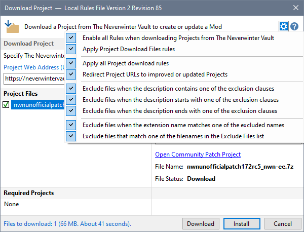
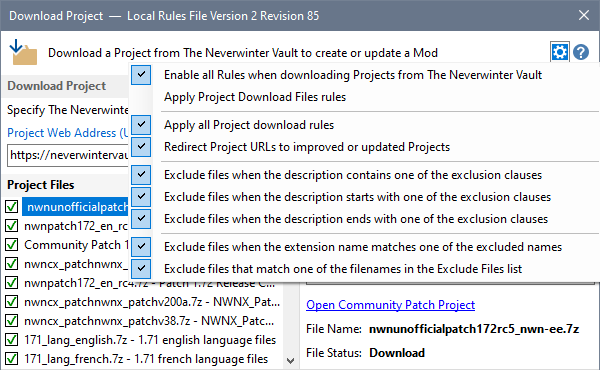

Download Rules define file selection criteria for Project Files. The rules also define default Mod Folder and Group names for selected Projects. Look at the Preferences page in Advanced Settings to view information on what types of rules are defined and their purpose.
In almost all cases, you want the rules to be applied to make downloading Projects as simple as possible. However, there are some Projects where you may want to manually select which files are downloaded. In addition, contributions to Download Rules are very welcome.
You can click the Project Download Rules Preferences icon to view and change which rules are applied.

The rule defined for the Community Patch Project selects either the NWN or Enhanced Edition file for download. However, there are a number of other files that you may wish to download. Disable Apply Project Download File rules to show all available files.

You can now select which files you wish to download or disable other rules such as the Exclude files that match one of the filenames in the Exclude Files list to show additional files in the Project and Required Projects lists.
Changes you make to the Project Download Rules Preferences are only applied for the current Project download. So if you want to adjust the rules permanently, you need to use the Preferences page in Advanced Settings.
Specify the Neverwinter Vault Project page
Work with Download Rules
Review and customise download information